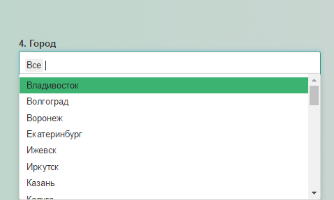

3 Анализ данных
Приложение позволяет проводить анализ данных чувствительности микроорганизмов к антимикробным препаратам. Аналитические модули расположены на вкладке приложения Основная информация. Чтобы перейти на данную вкладку, необходимо в верхней части экрана нажать Основная информация. (ниже на рис. отмечено красным).
После этого, откроется вкладка Основная информация, в которой условно можно выделить две составляющих:
- поле параметров;
- поле инфографики.
Ниже на рисунке представлен общий вид вкладки Основная информация.
3.1 Поле параметров
Данное поле предназначено для выбора интересующих пользователя параметров и управления анализом. Следует отметить, что выбор параметров осуществляется последовательно от 1 до 14, т.к. параметры зависимы друг от друга. Поле параметров включает в себя следующие составляющие, описанные ниже.
Группа инфекций - параметр, определяющий одну из трех групп инфекционных заболеваний (нозокомиальные / внебольничные / все).
Федеральный округ - параметр, определяющий выбор федерального(ых) округа(ов) Российской Федерации, информация по которому(ым) будет проанализирована (значение по умолчанию Все). Доступен как множественный выбор, так и одиночный выбор, при этом, выбирая в списке пункт Все, отпадает необходимость физически выбирать все Федеральные округа. Доступен текстовый поиск (просто начните печатать в строке ввода данных).
Область/край/республика - параметр, определяющий выбор соответствующего субъекта(ов) Российской Федерации, информация по которому(ым) будет проанализирована (значение по умолчанию Все). Доступен как множественный выбор, так и одиночный выбор, при этом, выбирая в списке пункт Все, отпадает необходимость физически выбирать все области/края/республики. Доступен текстовый поиск (просто начните печатать в строке ввода данных). Данный параметр напрямую зависит от параметра 2. Федеральный округ.
Город - параметр, определяющий выбор интересующего(их) города(ов) Российской Федерации, информация по которому(ым) будет проанализирована (значение по умолчанию Все). Доступен как множественный выбор, так и одиночный выбор, при этом, выбирая в списке пункт Все, отпадает необходимость физически выбирать все города. Доступен текстовый поиск (просто начните печатать в строке ввода данных). Данный параметр напрямую зависит от параметра 3. Область/край/республика.
ЛПУ - параметр, определяющий выбор интересующего(их) ЛПУ, информация по которому(ым) будет проанализирована (значение по умолчанию Все). Доступен как множественный выбор, так и одиночный выбор, при этом, выбирая в списке пункт Все, отпадает необходимость физически выбирать все ЛПУ. Данный параметр напрямую зависит от параметра 4. Город. ВНИМАНИЕ, данный параметр доступен только для привилегированных пользователей.
Профиль отделения - параметр выбора интересующего пользователя профиля отделения, информация по которому(ым) будет проанализирована (значение по умолчанию Все). Доступен как множественный выбор, так и одиночный выбор, при этом, выбирая в списке пункт Все, отпадает необходимость физически выбирать все отделения. Доступен текстовый поиск (просто начните печатать в строке ввода данных). Данный параметр напрямую зависит от параметра 5. ЛПУ, в случае пользователя с привилегированным доступом, или от параметра 4. Город, в случае пользователя с общими правами доступа.
Локализация инфекции - параметр, определяющий выбор интересующей(их) локализации(ий) инфекции, информация по которому(ым) будет проанализирована (значение по умолчанию Все). Доступен как множественный выбор, так и одиночный выбор, при этом, выбирая в списке пункт Все, отпадает необходимость физически выбирать все варианты доступных локализаций инфекций. Доступен текстовый поиск (просто начните печатать в строке ввода данных). Данный параметр напрямую зависит от параметра 6. профиль отделения.
Возраст пациента, лет - параметр, задающий диапазон значений возраста пациентов (от которых были получены образцы для исследования) в формате от… до…, информация по которым будет проанализирована.
Период - параметр, задающий временной интервал проведения проспективных исследований по мониторингу антибиотикорезистентности (в годах), информация по которым будет проанализирована.
Группа микроорганизмов - параметр, определяющий выбор интересующей(их) группы микроорганизмов, информация по которой(ым) будет проанализирована (значение по умолчанию Все). Доступен как множественный выбор, так и одиночный выбор, при этом, выбирая в списке пункт Все, отпадает необходимость физически выбирать все группы микроорганизмов. Доступен текстовый поиск (просто начните печатать в строке ввода данных). Данный параметр напрямую зависит от параметра 7. Локализация инфекции.
Микроорганизм - параметр, определяющий выбор интересующего(их) микроорганизма(ов), информация по которому(ым) будет проанализирована (значение по умолчанию Все). Доступен как множественный выбор, так и одиночный выбор, при этом, выбирая в списке пункт Все, отпадает необходимость физически выбирать все микроорганизмы. Доступен текстовый поиск (просто начните печатать в строке ввода данных). Данный параметр напрямую зависит от параметра 10. Группа микроорганизмов.
АМП - параметр, определяющий выбор интересующего антимикробного препарата (АМП), информация по которому будет проанализирована. Доступен текстовый поиск (просто начните печатать в строке ввода данных). Данный параметр напрямую зависит от параметра 11. Микроорганизм.
Ширина 95% ДИ - числовой параметр, изменяющийся от 0% до 100%. ВНИМАНИЕ, изменение данного параметра может привести к изменению результатов. Регулируя данный параметр пользователь может отображать данные с “низким потенциальным разбросом” (“высокой достоверностью”). Чем меньше числовое значение данного параметра, тем ниже “потенциальный разброс” (“выше достоверность”). Пример работы с данным параметром будет приведен ниже.
Авторы данного руководства осознают некорректность терминов “высокая достоверность”, “низкая достоверность” и оправдывают употребление данных “терминов” желанием пояснить работу данного параметра. Для ознакомления с понятием доверительный интервал перейдите по ссылке.
- Отображение - параметр, регулирующий формат представления графической информации в поле инфографики. Пользователю предлагается два варианта отображения SIR и S/Non-S.
- Аббревиатура SIR обозначает три категории активности изучаемого препарата по отношению к изучаемому микроорганизму, где:
- S (от англ. “susceptible”) - чувствительные микроорганизмы. В поле инфографики показатели, характеризующие доли чувствительных микроорганизмов, отображены зеленым цветом.
- I (от англ. “intermediate”) - микроорганизмы с промежуточной чувствительностью. В поле инфографики показатели, характеризующие доли микроорганизмов с промежуточной чувствительностью, отображены желтым цветом.
- R (от англ. “resistant”) - устойчивые микроорганизмы. В поле инфографики показатели характеризующие доли устойчивых микроорганизмов отображены красным цветом.
- S (от англ. “susceptible”) - чувствительные микроорганизмы. В поле инфографики показатели, характеризующие доли чувствительных микроорганизмов, отображены зеленым цветом.
- Аббревиатура S/Non-S несет в себе туже информацию, что и аббревиатура SIR, однако здесь категории I и R объединены в одну категорию Non-S. Таким образом, данный формат отображаения представлен двумя категориями:
- S (от англ. “susceptible”) - чувствительные микроорганизмы. В поле инфографики показатели, характеризующие доли чувствительных микроорганизмов, отображены зеленым цветом.
- Non-S (от англ. “resistant”) - нечувствительные микроорганизмы. В поле инфографики показатели характеризующие доли нечувствительных микроорганизмов отображены красным цветом.
- Аббревиатура SIR обозначает три категории активности изучаемого препарата по отношению к изучаемому микроорганизму, где:
Кнопка Отобразить ТОП 10 становится доступна при заполнении параметров 1-7. Нажатие данной кнопки приводит к построению в поле инфографики на вкладках Топ 10 микроорг. и Топ 10 групп гистограмм частот выделения микроорганизмов и групп микроорганизмов для выбранных параметров 1-7.
Кнопка Отобразить становится доступна при заполнении параметров 1-14. Нажатие данной кнопки приводит к построению в поле инфографики на всех остальных вкладках соответствующих графиков.
Кнопка Скачать MS Word становится доступной при заполнении параметров 1-14. Нажатие данной кнопки приводит к формированию и скачиванию отчета по выбранным параметрам.
Таким образом, регулируя описанные выше параметры, пользователь отображает графическую информацию в поле инфографики. Следует отметить, что информация по вновь выбранным параметрам отобразится при нажатии кнопок Отобразить ТОП 10 и Отобразить.
3.2 Поле инфографики и интерпретация анализа данных
3.2.1 Подготовка к анализу данных
Данное поле предназначено для отображения графической информации. Для лучшего понимания принципов работы и интерпретации поля инфографики рассмотрим пример.
Приступая к анализу данных в приложении пользователю прежде всего необходимо сформулировать задачу (вопрос). Для примера сформулируем следующую задачу:
Определить чувствительность к различным антимикробным препаратам микроорганизмов и группы микроорганизмов, которые наиболее часто, согласно данным приложения, были выделены при Нозокомиальных инфекциях во Всех федеральных округах, Всех краях/областях/республиках, Всех городах, Всех ЛПУ, Всех отделениях, Всех локализациях инфекционного процесса, при возрасте исследуемой группы от 0 до 104 лет, за период с 1997 по 2015 гг.
Рассмотрим пошагово выбор данных параметров.
Выбор группы инфекций (указано красной стрелкой).
Выбор Всех федеральных округов (для того, чтобы не выбирать физически все доступные федеральные округа, выберем пункт Все из выпадающего списка, который появляется при нажатии на поле 2. Федеральный округ).
Выбор Всех областей/краев/республик (для того, чтобы не выбирать физически все области/края/республики, выберем пункт Все из выпадающего списка, который появляется при нажатии на поле 3. Область/Край/республика).
Аналогично выбираем Все города в поле 4. Город.
Выбор в поле 5. ЛПУ имеет свои особенности: т.к. выбор в данном поле доступен только для привилегированных пользователей, пользователи с общими правами доступа не могут использовать данное поле, и значение Все выбрано по умолчанию.
Выбираем профили отделения Всех типов в поле 5. Профиль отделения.
Выбираем Все виды локализаций инфекций в поле 6. Локализация инфекции.
Выбираем 8. Возраст пациента, лет и 9. Период
Напомним, что для начала нам нужно определить микроорганизмы и группы микроорганизмов которые, наиболее часто, согласно данным приложения, были выделены при выбранных параметрах. Чтобы ответить на данный вопрос, необходимо нажать на кнопку Отобразить ТОП 10.
После нажатия на данную кнопку в поле инфографики на вкладках Топ 10 микроорг. и Топ 10 групп отобразятся интерактивные гистограммы частот выделения микроорганизмов и групп микроорганизмов соответственно (представлены ниже).
Переключение между вкладками осуществляется нажатием на соответствующие вкладки (обведены красным на рисунке ниже).

Таким образом, изучая графики ТОП 10 микроорганизмов и ТОП 10 групп, пользователь может получить информацию о микроорганизмах и группе микроорганизмов, которые наиболее часто выделяются при заданных параметрах.
Следует отметить, что данные графики призваны помочь пользователю сориентироваться при выборе параметров 10. Группа микроорганизмов и 11. Микроорганизм, подразумевая, что пользователю интересны наиболее часто встречающиеся возбудители.
После того, как пользователь получил представление о частотах выделения микроорганизмов и групп микроорганизмов, необходимо приступить к выбору параметров 10. Группа микроорганизмов и 11. Микроорганизм.
Выбор группы микроорганизмов.
Предположим, что после изучения графика на вкладке ТОП 10 групп, пользователя заинтересовала группа, занимающая 4-е место по частоте выделения - Acinetobacter spp. Выберем данную группу в поле 10. Группа микроорганизмов.
После выбора группы микроорганизмов необходимо выбрать интересующий пользователя микроорганизм. Выберем Все микроорганизмы в группе Acinetobacter spp. в поле 11. Микроорганизм.
Выбираем интересующий антимикробный препарат (АМП) в поле 12. АМП.
Работу с параметром Ширина 95% ДИ рассмотрим ниже. При первых шагах анализа рекомендуем данный параметр оставить равным 100.
Выбираем формат отображения в поле 14. Отображение.
Следует напомнить:- Аббревиатура SIR обозначает три категории активности изучаемого препарата по отношению к изучаемому микроорганизму, где:
- S (от англ. “susceptible”) - чувствительные микроорганизмы. В поле инфографики показатели, характеризующие доли чувствительных микроорганизмов, отображены зеленым цветом.
- I (от англ. “intermediate”) - микроорганизмы с промежуточной чувствительностью. В поле инфографики показатели, характеризующие доли микроорганизмов с промежуточной чувствительностью, отображены желтым цветом.
- R (от англ. “resistant”) - устойчивые микроорганизмы. В поле инфографики показатели характеризующие доли устойчивых микроорганизмов отображены красным цветом.
- S (от англ. “susceptible”) - чувствительные микроорганизмы. В поле инфографики показатели, характеризующие доли чувствительных микроорганизмов, отображены зеленым цветом.
- Аббревиатура S/Non-S несет в себе туже информацию, что и аббревиатура SIR, однако здесь категории I и R объединены в одну категорию Non-S. Таким образом, данный формат отображения представлен двумя категориями:
- S (от англ. “susceptible”) - чувствительные микроорганизмы. В поле инфографики показатели, характеризующие доли чувствительных микроорганизмов, отображены зеленым цветом.
- Non-S (от англ. “resistant”) - нечувствительные микроорганизмы. В поле инфографики показатели характеризующие доли нечувствительных микроорганизмов отображены красным цветом.
В нашем случае выберем SIR. При дальнейшем разборе примера анализа также будет продемонстрирован формат отображения S/Non-S.
- Аббревиатура SIR обозначает три категории активности изучаемого препарата по отношению к изучаемому микроорганизму, где:
На этом действия по выбору параметров заканчиваются, пользователю становится доступна кнопка Отобразить. При ее нажатии во всех вкладках в поле инфографики, за исключением вкладок Топ 10 микроорг. и Топ 10 групп, отображается графическая информация.
3.2.2 Интерпретация анализа данных
Основная информация об активности АМП представлена на вкладках ниже.
3.2.2.1 Антибиотики (ТОП)
Переход на данную вкладку осуществляется нажатием на надпись Антибиотики (ТОП).
Несмотря на то, что в поле 12. АМП выбран Амикацин, на вкладке Антибиотики (ТОП) отображается информация об активности всех доступных АМП в отношении выбранной комбинации группа микроорганизмов - микроорганизм. На представленной выше столбчатой гистограмме по оси x отображены АМП, по оси y - процент чувствительных (S) и устойчивых (R) штаммов, а также процент штаммов с промежуточной чувствительностью (I).
При изменении в поле 14. Отображение значения с SIR на S/Non-S и нажатии кнопки Отобразить график изменится следующим образом:
Категория штаммов с промежуточной чувствительностью (I) на данном графике суммирована с категорией устойчивых (R) штаммов. Суммарный результат представлен в виде категории нечувствительных (Non-S) штаммов. Категория чувствительных (S) штаммов на данной гистограмме аналогична соответствующей категории при отображении в формате SIR.
Представленные выше гистограммы являются интерактивными:
- при наведении курсора мыши на интересующую часть гистограммы отобразится всплывающее окно с числовым значением (в %) для данного столбца;
- используя легенду под графиком (нажимая на отдельные категории), пользователь может регулировать отображение интересующих его категорий;
- пользователю доступна возможность сохранить гистограмму в желаемом формате. Для этого необходимо в правом верхнем углу графика нажать на символ “три полоски” и выбрать в выпавшем меню нужный формат (пример на рис. ниже).
Кроме столбцов SIR (S/Non-S) на гистограмме черными линиями отображены так называемые “усы”. Нижняя граница которых соответствует нижней границе 95% доверительного интервала, а верхняя граница - верхней границе 95% доверительного интервала для соответствующих столбцов.
При наведении курсора на место, где “ус” пересекается с столбцом, появляется всплывающее окно, в котором отображены значения верхней и нижней границы 95% ДИ для данного столбца. Авторы позволят себе процитировать статью из Википедии, раскрывающих суть доверительного интервала
…Более точное, хоть также не совсем строгое, толкование доверительного интервала с уровнем доверия, скажем, 95% состоит в следующем. Если провести очень большое количество независимых экспериментов с аналогичным построением доверительного интервала, то в 95% экспериментов доверительный интервал будет содержать оцениваемый параметр…, а в оставшихся 5% экспериментов доверительный интервал не будет содержать оцениваемый параметр…
Таким образом, для изучаемых данных это означает следующее: при проведении аналогичных исследований и оценивании значений категорий SIR (S/Non-S), в 95% исследований значение категорий SIR (S/Non-S) окажется в пределах, обозначенных соответствующими “усами”. Отсюда следует, что чем уже доверительный интервал, т.е. чем меньше его ширина, тем меньше вероятность возникновения “кардинально противоположных” значений при проведении аналогичных исследований.
Заканчивая рассматривать вкладку Антибиотики (ТОП 10), следует отметить что значения SIR (S/Non-S) суммируются для выбранного временного периода (в нашем случае это 1997-2015 гг.). Кроме того, сама столбчатая гистограмма призвана в большей мере дать пользователю информацию об активности всех доступных АМП в отношении выбранной комбинации группа микроорганизмов - микроорганизм. Подробный анализ выбранного АМП проводится на оставшихся вкладках.
3.2.2.2 Гистограмма
Переход на данную вкладку осуществляется нажатием на надпись Гистограмма.
На вкладке представлена сгруппированная гистограмма для выбранного АМП (в нашем случае это Амикацин за период в времени с 1997 по 2015 гг.). По оси x отображены годы наблюдения, по оси y - процент чувствительных (S) и устойчивых (R) штаммов, а также процент штаммов с промежуточной чувствительностью (I).
Все особенности данной гистограммы (интерактивные возможности, переключение формата отображения между SIR и S/Non-S) аналогичны возможностям гистограммы на вкладке Антибиотики (ТОП 10). При изучении данной сгруппированной гистограммы, пользователь получает информацию о динамике активности выбранного АМП (в нашем случае Амикацина) по годам (за период в времени с 1997 по 2015 гг.) в отношении выбранной комбинации группа микроорганизмов - микроорганизм.
3.2.2.3 Гистограмма + 95% ДИ
Переход на данную вкладку осуществляется нажатием на надпись Гистограмма + 95% ДИ.
На вкладке представлена гистограмма c 95% доверительным интервалом для выбранного АМП (в нашем случае это Амикацин за период в времени с 1997 по 2015 гг.). По оси x отображены годы наблюдения, по оси y - процент чувствительных (S) и устойчивых (R) штаммов, а также процент штаммов с промежуточной чувствительностью (I).
Все особенности данной гистограммы (интерактивные возможности, переключение формата отображения между SIR и S/Non-S) аналогичны возможностям гистограммы на вкладке Гистограмма. При изучении данной сгруппированной гистограммы, пользователь получает информацию о динамике активности выбранного АМП (в нашем случае Амикацина) по годам (за период в времени с 1997 по 2015 гг.) в отношении выбранной комбинации группа микроорганизмов - микроорганизм. Однако на данной гистограмме отображены 95% доверительные интервалы для каждого столбца. Изучая ширину 95% доверительного интервала для каждого столбца, можно заметить достаточно широкие доверительные интервалы, например, ДИ для 2010 года (см. рис. ниже).
Истинные значения процента чувствительных и устойчивых штаммов, а также штаммов с промежуточной чувствительностью могут находится в любой точке в пределах доверительного интервала. Отсюда следует, что возможна ситуация, когда процент устойчивых штаммов может быть близок к 0% или к 100%. Тоже самое касается чувствительных штаммов и штаммов с промежуточной чувствительностью. Данная ситуация связана с незначительным размером выборки, поэтому степень доверия к данным за 2010 год низкая, о чем и свидетельствует широкий 95% доверительный интервал.
3.2.2.4 Таблица
Переход на вкладку осуществляется нажатием на надпись Таблица.
В таблице отражены значения процента чувствительных (S) и устойчивых (R) штаммов, а также процент штаммов с промежуточной чувствительностью (I) для выбранного АМП (в нашем случае это Амикацин за период в времени с 1997 по 2015 гг.). Кроме того, в таблице представлено абсолютное количество соответствующих штаммов и значения 95% ДИ. При изменении формата отображения на S/Non-S в таблице произойдут изменения аналогичные изменениям гистограммы, которые описаны ранее.
3.2.2.5 Суммарная информация
Переход на данную вкладку осуществляется нажатием на надпись Суммарная информация.
На вкладке представлена суммарная информация для выбранного АМП (Амикацин) при соответствующей комбинации группа микроорганизмов - микроорганизм за весь выбранный период (1997-2015 гг.). В информационных баннерах представлен процент, 95% ДИ, абсолютное количество чувствительных (S) и устойчивых (R) штаммов, а также процент штаммов с промежуточной чувствительностью (I). В фиолетовых баннерах представлена информация о количестве протестированных изолятах (штаммах) и количестве городов Российской Федерации, из которых поступил клинический материал.
Следует отметить, что для данной вкладки доступен только формат отображения SIR.
3.2.2.6 Карта
Переход на данную вкладку осуществляется нажатием на надпись Карта.

На вкладке представлена интерактивная карта для выбранного АМП (в нашем случае это Амикацин за период в времени с 1997 по 2015 гг.). На карте отмечены города Российской Федерации, по котором доступна информация при выбранных параметрах. В целом, размер окружностей пропорционален доле штаммов, поступивших из географической точки наблюдения (города). “Внутри” географической точки наблюдения (города) размер зеленых, красных и желтых окружностей пропорционален проценту чувствительных (S) и устойчивых (R) штаммов, а также проценту штаммов с промежуточной чувствительностью (I) соответственно. Нажав на указатель синего цвета с белой точкой, пользователю станет доступна информация о проценте чувствительных (S) и устойчивых (R) штаммов, а также проценте штаммов с промежуточной чувствительностью (I) для географической точки наблюдения (города). В верхнем правом углу интерактивной карты доступно меню, где возможен выбор различных типов карт и легенда (нажимая на отдельные составляющие легенды пользователь может регулировать отображение интересующих его категорий - аналогично описанным ранее гистограммам) (см. рис. ниже).
Следует отметить, что для вкладки Карта доступен формат отображения S/Non-S.
3.2.2.7 Тренды
Переход на данную вкладку осуществляется нажатием на надпись Тренды (для вкладки доступен только формат отображения S/Non-S). 
В верхней части вкладки представлены графики трендов с 95% доверительным интервалами для выбранного АМП (в нашем случае это Амикацин за период в времени с 1997 по 2015 гг.). По оси x отображены годы наблюдения, по оси y - процент чувствительных (S) и нечувствительных (Non-S) штаммов. При наведении курсора на интересующую точку наблюдения отображается окно, в котором содержится информация о проценте S/Non-S штаммов и соответствующих 95% доверительных интервалах. Пользователю доступна возможность сохранить тренд в желаемом формате. Для этого необходимо в правом верхнем углу графика нажать на символ “три полоски” и выбрать в выпавшем меню нужный формат.
В нижней части вкладки отображены графы множественных сравнений между периодами наблюдения для S и Non-S штаммов. Задача данных графов продемонстрировать результаты сравнений процента S/Non-S штаммов между различными временными точками наблюдения. При наличии связи (линии) между узлами графа (которые соответствуют годам), различия в проценте S/Non-S штаммов считаются статистически значимыми (не случайными, p < 0,05). Градиент цвета узла пропорционален проценту S/Non-S штаммов (от более светлого к более темному). Данные графы являются интерактивными: при нажатии на интересующий узел (временную точку наблюдения) отобразятся лишь те узлы, которые имеют связь с выбранным узлом (см. рисунок ниже).
На данном рисунке выбранный узел, соответствующий 2007 г., связан с узлами, которые соответствуют 1998 и 2014 гг. Это значит, что различия в проценте чувствительных штаммов между 2007 г. (29,51%) и 1998 (89,14%), а также между 2007 г. (29,51%) и 2014 (9,94%) статистически значимы (p < 0,05). Иными словами, имеется снижение уровня чувствительности.
Следует отметить, что пользователю доступна возможность увеличивать и уменьшать размеры графа, путем использования кнопки scroll, а также удерживая левую кнопку мыши пользователь может перемещать граф.
Прежде чем перейти к вкладке Регрессия следует рассмотреть использование параметра 13. Ширина 95% ДИ. При разборе столбчатых гистограмм обсуждался вопрос ширины доверительного интервала и доверия к данным.
…чем меньше его ширина, тем меньше вероятность возникновения “кардинально противоположных” значений при проведении аналогичных исследований…
С помощью параметра 13. Ширина 95% ДИ пользователю доступна возможность выводить наблюдения с заданной шириной 95% доверительного интервала. Разберем на примере тренда Non-S. Ниже представлен рисунок при значении параметра 13. Ширина 95% ДИ, заданном по умолчанию (100%), иными словами отображаются все точки, даже те, значения которых могут колебаться в пределах от 0% до 100%.
Изменим значение параметра 13. Ширина 95% ДИ на 13% и нажмем кнопку Отобразить.
Оценим полученный тренд
На представленном выше графике не отображаются наблюдения, ширина 95% ДИ которых превышает заданную величину в 13%. Таким образом, за счет удаления точек с “потенциально высоким смещением” (широким 95% ДИ), удается увидеть явную тенденцию роста процента Non-S штаммов. Примечательно, что в данной ситуации на графике остаются точки, которые при проведении аналогичных исследований в 95% случаев отличались бы от наблюдаемого значения не более чем на +/- 6,5%.
Следует отметить, что изменение параметра 13. Ширина 95% ДИ, помимо трендов, влияет и на графы множественных сравнений, которые становится легче интерпретировать за счет уменьшения точек наблюдения, а также на графики во вкладках Антибиотики (ТОП), Гистограмма, Гистограмма + 95% ДИ, Таблица.
3.2.2.8 Регрессия
Переход на данную вкладку осуществляется нажатием на надпись Регрессия (для вкладки для вкладки доступен только формат отображения S/Non-S).

На представленных графиках по оси x отображены годы наблюдения, по оси y - процент либо чувствительных (S), либо нечувствительных (Non-S) штаммов. Каждая точка на графике соответствует конкретному городу в конкретный год наблюдения (данные суммируются на последний день наблюдения в текущем году). Линия тренда представляет собой аппроксимацию зависимости между годом (точнее временными точками наблюдения) и процентом S/Non-S штаммов с помощью ядерной регрессии. Данная линия учитывает количество точек и их значение, и стремится описать траекторию с меньшей погрешностью. Серым цветом отмечен 95% ДИ для линии тренда.
В верхней части вкладки представлены дополнительные параметры: выбор отображения типа тренда (S или Non-S), активация отображения названий городов на тренде, а также параметр Сглаживание (значение по умолчанию 0,5). При уменьшении данного параметра линия тренда становится более извилистой, при увеличении - стремится к прямой.
На графике трендов хорошо заметны сильно отличающиеся точки. Зажав левую кнопку мыши и обведя интересующие точки, пользователь может получить дополнительную информацию в таблице ниже.
Анализируя результаты в таблице, становится ясно, что сильное отличие от тренда (относительно низкое значение процента Non-S штаммов) у данных точек скорее всего связано с малым объемом выборки (количеством исследованных штаммов).